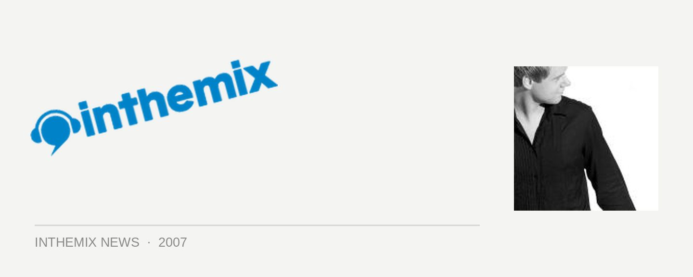

Chat live with Armin Van Buuren next week!
ITM has announced some massive webchats in the past week as part of ‘in the spotlight’, but we’ve got another massive one coming up. Next Tuesday 29th May at 6pm EST you’ll get your chance to chat to Dutch Trance god Armin Van Buuren as he prepares to tour Australia over the June Long Weekend.
When it comes to global DJing superstars they don’t get much bigger than Armin Van Buuren. He recently celebrated a decade in dance music with the release of his 10 Years compilation, and he’s come a long way since DJs started canning his classic single Blue Fear in 1997. But his stock has risen even further in the past few years which have seen him ascend to the #2 spot on DJ Mag poll, just behind Paul Van Dyk’s and pushing aside fellow Dutchman Tiesto. With his famed A State of Trance radio show and compilation series, it looks like Armin is here to stay.
Trance fans get excited, as ITM will be hosting him next week for ‘in the spotlight’, where you’ll get the chance to ask him all your burning questions ahead of the upcoming White Parties. Everyone who logs in will have the chance to win some tasty Armin goodies, so mark it down in your diary and head to inthemix.com.au/chat/inthespotlight next Tuesday 28th May at 6pm EST to participate.
Chat Times:
06.00pm: NSW/ACT/VIC/QLD/TAS
05.30pm: SA/NT
04.00pm: WA
09.00am: London
04.00am: New York
01.00am: Los Angeles
To check the time in other cities around the world head to http://www.timeanddate.com/.
Presented by Smirnoff ICE, ‘in the spotlight’ features some of Australia and the world’s most sought-after artists every month. Chat are available to every registered member of inthemix, completely FREE of charge.